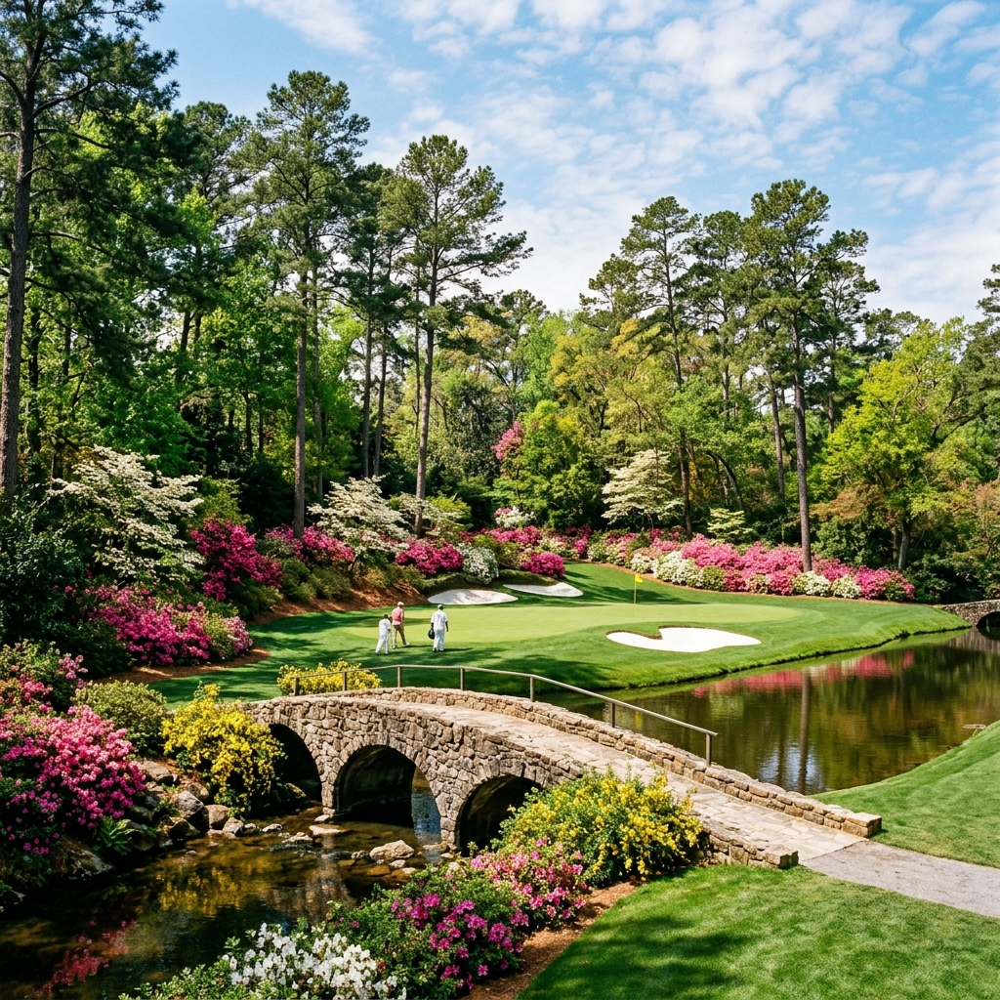
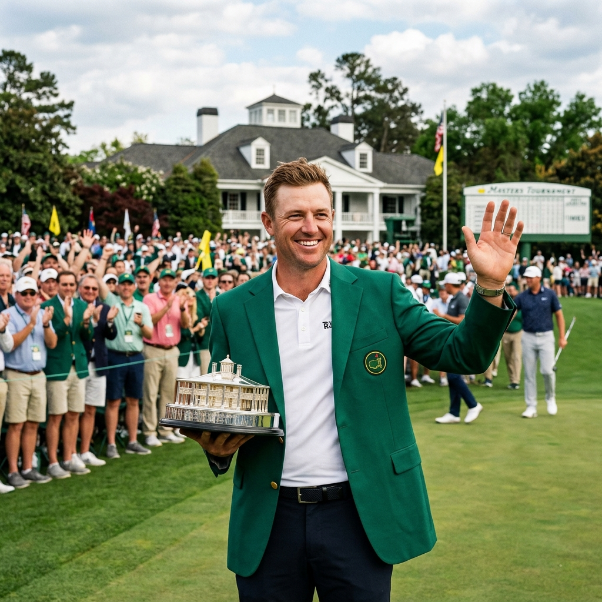

2026 마스터스 토너먼트 개막 — 오거스타 내셔널의 그린재킷, 올해의 주인공은 누구?
"골프의 봄은 오거스타에서 시작됩니다."
세계에서 가장 권위 있고 신비로운 골프 대회, '2026 마스터스 토너먼트'가 드디어 미국 조지아주 오거스타 내셔널 골프클럽에서 막을 올립니다. 오로지 초청받은 자들만이 밟을 수 있는 신성한 필드, 그리고 우승자에게 수여되는 영광의 '그린재킷'을 향한 별들의 전쟁이 시작되는데요. 올해 마스터스의 관전 포인트와 주요 선수들의 컨디션, 그리고 전설적인 '아멘 코너'의 비밀까지 골프 팬들을 위한 완벽한 프리뷰를 준비했습니다.

▲ 아름답지만 치명적인 유혹, 오거스타 최고의 승부처 '아멘 코너'의 전경입니다.
1. 2026 마스터스 토너먼트 개요 (일정 & 장소)
마스터스는 매년 4월 둘째 주에 개최되는 시즌 첫 번째 메이저 대회입니다. 중계권, 광고, 갤러리 입장권까지 모든 것이 철저하게 관리되는 이 대회는 골프 그 이상의 품격을 자랑합니다.
| 항목 |
상세 정보 |
| 대회 일시 |
2026. 04. 09.(목) ~ 04. 12.(일) [현지 시각] |
| 개최 장소 |
미국 조지아주 오거스타 내셔널 골프클럽 |
| 디펜딩 챔피언 |
로리 매킬로이 (2025년 우승자, 커리어 그랜드슬램 달성) |
| 총 상금 |
$2,100만 (우승 상금 $420만) |
2. 오거스타의 악명 높은 승부처 — '아멘 코너(Amen Corner)'
마스터스 중계에서 가장 많이 언급되는 단어 중 하나가 바로 '아멘 코너'입니다. 11번 홀 후반부터 12번 홀 전체, 그리고 13번 홀 전반을 일컫는 이 구간은 워낙 악명 높은 난이도 때문에 선수들이 절로 "아멘"이라는 탄식을 내뱉는다고 해서 붙여진 이름입니다.
- 11번 홀 (화이트 도그우드): 긴 전장과 그린 왼쪽의 워터 해저드가 선수들을 압박합니다.
- 12번 홀 (골든 벨): 마스터스에서 가장 짧은 파3 홀이지만, 변덕스러운 바람과 레이의 크리크(Rae's Creek)가 수많은 선수의 우승 꿈을 앗아갔습니다.
- 13번 홀 (아젤리아): 수만 송이의 진달래가 장관을 이루는 아름다운 홀이지만, 리스크 테이킹에 따른 이글과 더블 보기가 공존하는 '기회의 땅'입니다.

▲ 그린재킷은 단순한 우승 복장이 아닌, 골프 역사에 이름을 새기는 영예의 상징입니다.
3. 올해의 관전 포인트 — 타이거 우즈와 코리안 브라더스
2026년 마스터스 역시 화려한 라인업을 자랑합니다. 특히 전설 타이거 우즈의 출전 여부와 한국 선수들의 활약에 전 세계의 이목이 쏠리고 있습니다.
2026 주요 선수 전망
- 로리 매킬로이 (Rory McIlroy): 디펜딩 챔피언의 위엄! 지난해 저스틴 로즈와 피 말리는 연장 접전 끝에 생애 첫 그린재킷을 입으며 커리어 그랜드슬램을 완성한 그가 대회 2연패에 도전합니다.
- 타이거 우즈 (Tiger Woods): 전설의 귀환! 몸 상태가 완벽하지 않음에도 오거스타의 코스를 누구보다 잘 아는 그가 다시 한번 컷 통과를 넘어 상위권 진입을 노립니다.
- 스코티 셰플러 & Jon 람: 세계 최강자들의 자부심 대결. 특히 셰플러는 2024년 챔피언으로서 다시 한번 왕좌 탈환을 노리고 있습니다.
- 임성재 & 김주형 (Tom Kim): 대한민국 골프의 자존심! 견고한 샷감을 유지하고 있는 임성재와 공격적인 플레이의 김주형이 오거스타에서 태극기를 펄펄 날릴 준비를 마쳤습니다.
[이미지: 푸른 파인 트리와 화려한 꽃밭이 어우러진 오거스타 내셔널의 상징적인 화이트 클럽하우스 풍경]
(AI Image Prompt: The historic white clubhouse of Augusta National Golf Club, with a large flower bed in front and tall pine trees. Clear blue sky. ratio 1:1)
▲ 철저한 회원제로 운영되는 오거스타 내셔널의 화이트 클럽하우스는 골퍼들의 성지와도 같습니다(예시 프롬프트).
4. 마스터스만의 독특한 전통들
마스터스를 더 재밌게 즐기기 위해서는 이 대문의 고유한 전통을 알아두는 것이 좋습니다.
- 챔피언스 디너: 대회를 앞둔 화요일 밤, 역대 우승자들이 모여 지난 대회 우승자가 선정한 메뉴로 저녁 식사를 함께하는 전통입니다.
- 파3 콘테스트: 본 대회 전날, 선수들이 가족이나 연인을 캐디로 동반해 가벼운 마음으로 즐기는 파3 이벤트 경기입니다.
- 패트런 (Patrons): 마스터스에서는 갤러리를 단순히 관객이라 부르지 않고 '공헌자'라는 뜻의 패트런이라 부르며 최고의 예우를 갖춥니다.
5. 한국 팬들을 위한 중계 시청 팁
미국 현지와의 시차 때문에 한국 골프 팬들은 밤잠을 설쳐야 하지만, 마스터스는 그럴만한 가치가 충분합니다.
- 심야 중계 일정: 한국 시각으로는 목요일 밤부터 월요일 새벽까지 생중계됩니다. 최종 라운드는 월요일 새벽 3~4시경 절정에 도달할 예정입니다.
- 공식 홈페이지 활용: Masters.com 공식 앱과 홈페이지에서는 주요 조의 실시간 스트리밍 'Every Shot, Every Hole' 서비스를 제공하므로 특정 선수의 모든 샷을 팔로우할 수 있습니다.
관람 포인트: 오거스타의 그린은 '유리알 그린'으로 유명합니다. 공을 홀컵 옆에 붙였음에도 불구하고 경사를 타고 그린 밖으로 굴러 나가는 아찔한 장면들을 지켜보는 것이 마스터스 관전의 백미입니다.
6. 맺음말 — 전 세계 골프 팬들의 축제, 이제 시작입니다
단 한 장의 입장권(패지)을 구하기 위해 평생을 기다리는 사람들도 있을 만큼 마스터스는 골프 그 이상의 예술입니다. 화려한 아젤리아 꽃밭과 대비되는 냉혹한 승부의 세계! 과연 2026년 오거스타의 마지막 날, 새로운 그린재킷을 입고 포효할 주인공은 누가 될까요? 우리 함께 밤잠을 설칠 준비를 해봅시다.
대회 관련 공지
본 포스팅은 마스터스 토너먼트 공식 발표 자료와 역사적 기록을 바탕으로 작성되었습니다. 2026년 대회 상세 티오프 시간 및 조 편성은 대회 직전 공식 홈페이지를 통해 확인하시기 바랍니다. 모든 이미지는 팬들의 이해를 돕기 위한 예시 자료입니다.
👉 골프 덕후 필수! [비거리 20야드 늘려주는 드라이버 스윙 핵심 포인트 3가지]
태그:
#2026마스터스
#오거스타내셔널
#그린재킷
#타이거우즈
#아멘코너
#메이저골프대회
#임성재마스터스
#김주형골프
#로리매킬로이
#골프중계일정
#PGA투어
#오거스타단점
#마스터스우승상금
#파3콘테스트
#골프인생샷